Construction du mercury (Indoor) en dépron
Bonjour à toutes et à tous. Aujourd’hui, je vous propose un petit tutoriel sur la construction d’un avion en Dépron pour 130 euros environs électronique comprise.
Présentation de l’avion
Le Mercury est un avion indoor pour la pratique du F3P (voltige). Vous pourrez essentiellement l’utilisé en intérieur et en extérieur par vent nul.
Dimensions
- Envergure: 80 cm
- Longueur: 89 cm
- Poids sans électronique: environ 110 gr
Prérequis
Avant de se lancer dans la construction de cet avion, voici la liste du matériel.
- Dépron 6mm (Castorama 81€ le carton de 10 plaques soit 8,10€ pour la construction)
- Colle (Pistolet à colle ou cyanoacrylate)
- Un cutter bien aiguisé
- 1 jonc en carbone 2mm
- 1 morceau de ctp 3mm
- 3 mini servos (35€)
- 1 récepteur (environ 30€)
- 1 ESC 10A (20€)
- 1 moteur brushless (30€)
- 1 hélice 9x4.7 (2-3€)
- 1 batterie 2S (environ 10€)
Construction
Je vous ai déniché les plans et le manuel en français. Vous avez de la chance.
1er étape - Découpage des pièces
Vous allez imprimer votre plan soit chez un imprimeur ou alors la version A4 puis assembler les feuilles pour former le plan.
Ensuite, vous disposerez votre plan sur une plaque de Dépron, pensez à bien fixer avec du scotch afin que cela ne bouge plus.
Maintenant, il ne reste plus qu’à découper les pièces avec un cutter avec une lame neuve. J’insiste sur la lame neuve afin de découper ne Dépron sans le déchirer.
Pour les plus chanceux, il est possible de faire une version numérique des plans afin de découper les pièces avec une cnc ou une découpe laser. Sachez que dans les grandes villes, on retrouve des fab labs. Ce sont des ateliers disposant de machines numériques (cnc, découpe laser, imprimante 3D, …). Je vous mets le lien https://www.fablabs.io/.
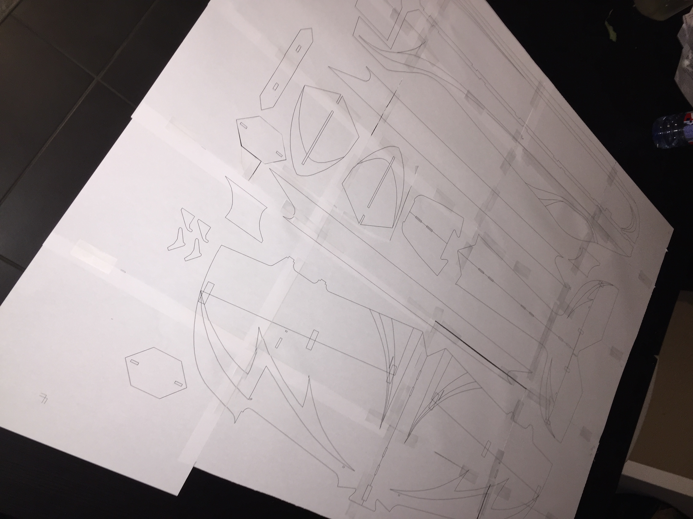
Mise en place du plan sur la plaque de Dépron
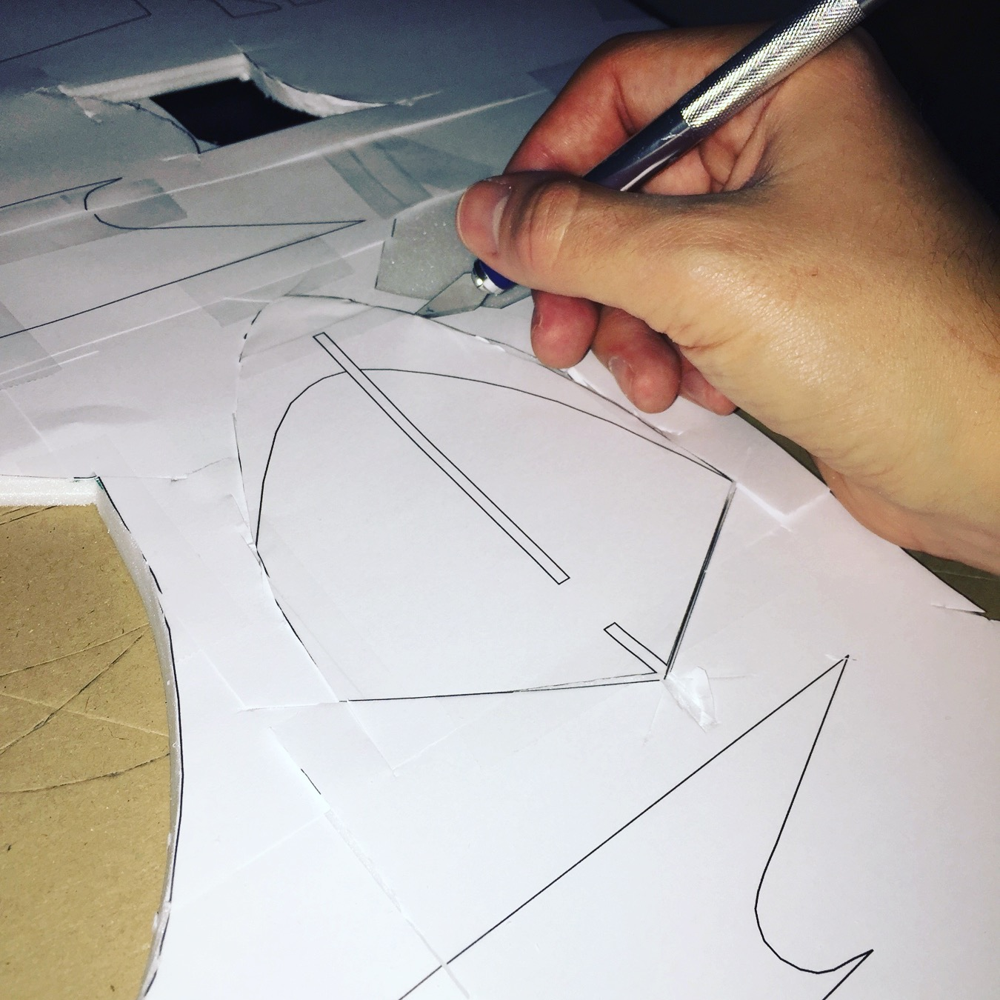
Découpe d’une des pièces
2ème étape - Poncer les pièces
Une fois découper, vous devrez poncer toutes vos pièces. Poncez le bord d’attaque de vos ailes et l’empennage en arrondit.
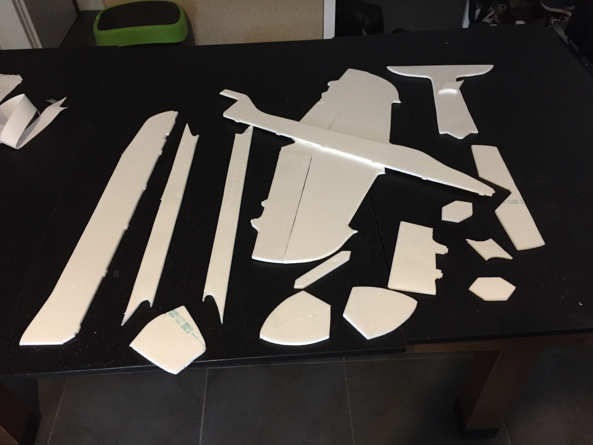
3ème étape - Renforcer la gouverne de profondeur
Découper un morceau de carbone de 8cm de long et placer au milieu de la partie mobile de la gouverne. Comme sur la photo ci-dessous.
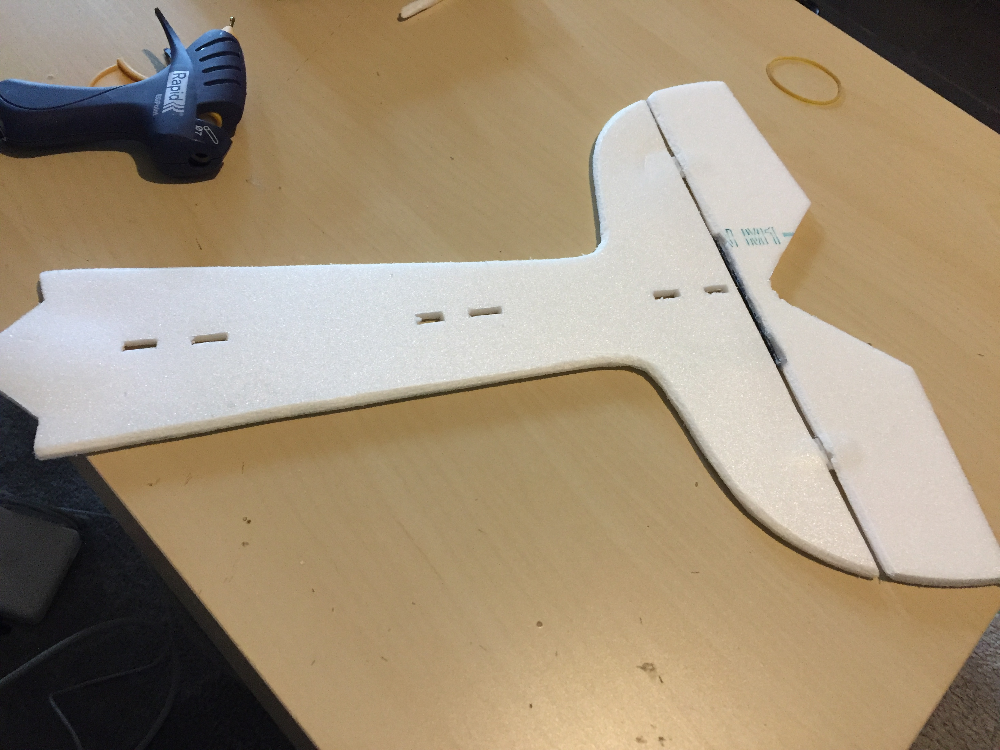
Rajout d’un renfort
4ème étape - Assembler le fuselage
Partie horizontale
Maintenant, nous allons assembler la partie horizontale du fuselage qui est constitué de 3 pièces. La gouverne de profondeur (attention dans mon cas la partie fixe et mobile sont déjà assemblé), l’aile et le nez. Normalement si vous avez bien fait vos découpes les 3 parties s’assemblent comme un puzzle.
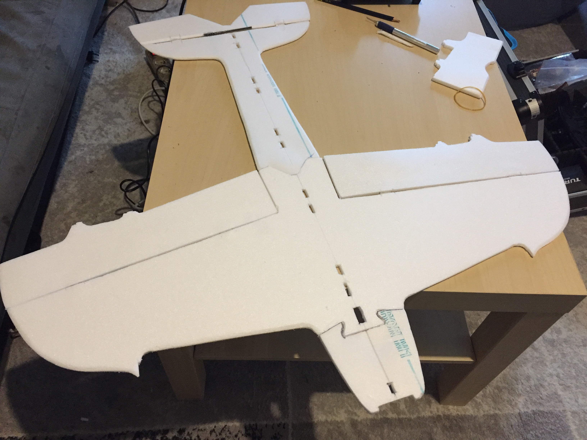
Assemblage du fuselage
Partie verticale
La partie verticale du fuselage est composée de 2 pièces, une pour la partie haute et l’autre pour la partie inférieure. Collez-les perpendiculairement à la partie horizontale. Des petits picots et des petits trous sont là pour vous aider à bien assembler les pièces. Elles doivent s’emboîter l’une dans l’autre. Vérifier avec une équerre que les 2 parties font un angle droit.
Pas de photo sur cette partie désolée :(
5 ème étape - Installer les gouvernes
Pour installer vos gouvernes, vous aurez besoin de 8 charnières (2 par éléments). Vous en trouverez par sachet de 10 ou plus dans votre magasin préféré.
Avant d’assembler les parties fixes et mobiles, il est utile de biseauter le bord qui accueillera les charnières afin de bénéficier d’un meilleur mouvement.
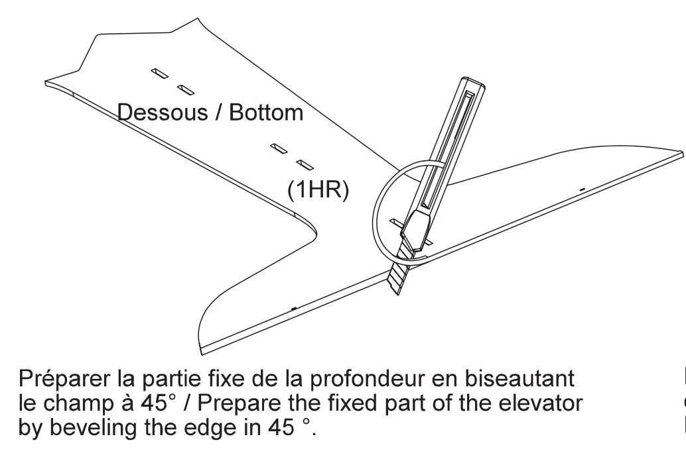
Ensuite, créer une petite entaille dans l’épaisseur du Dépron afin d’y rentrer vos charnières.
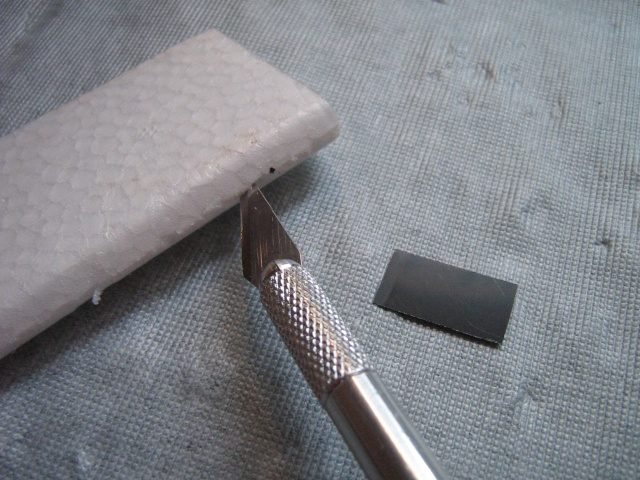
Sachez qu’il n’est pas obligé de mettre une charnière mettre une bande de scotch sur la jonction entre la partie fixe et mobile est possible. Cela dépend des goûts de chacun. Cependant, peu importe la solution choisie, laisser un petit espace de 5mm environ pour que le mouvement ne soit pas gêné.
6ème partie - Ajout des renforts
Maintenant que le gros de notre avion est terminé, nous allons ajouter les renforts. Vous trouverez tous les détails dans le manuel que je vous mettrai en téléchargement à la fin de l’article. Pour les renforts, nous avons découpé 4 pièces en Dépron (2 longues et 2 petites). Nous installerons les 2 petites sous les ailes en équerre avec le fuselage. Petite astuce: poncer les bords avec un angle de 45° comme cela ça épousera parfaitement l’angle.
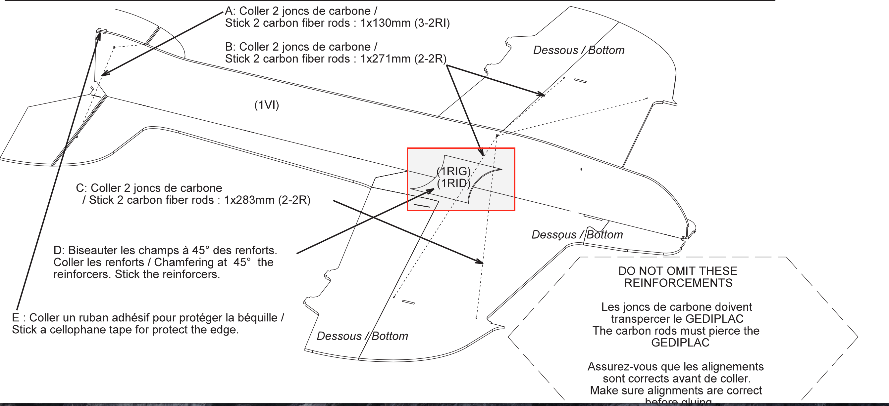
Il vous faudra rajouter des morceaux de carbone pour la béquille et le train. Tous les détails dans la photo juste au-dessus ou dans le manuel.
7ème partie - L’électronique
Maintenant que la structure est terminée, il nous reste qu’une chose à faire avant de voler, c’est de rajouter toute l’électronique embarquée et liée les tringles. Pour information, toute l’électronique se situera au niveau du nez sous et sur la partie horizontale. De cette façon, le poids de l’électronique équilibrera le centrage de l’avion.
Je vous mets des photos de toute l’électronique.
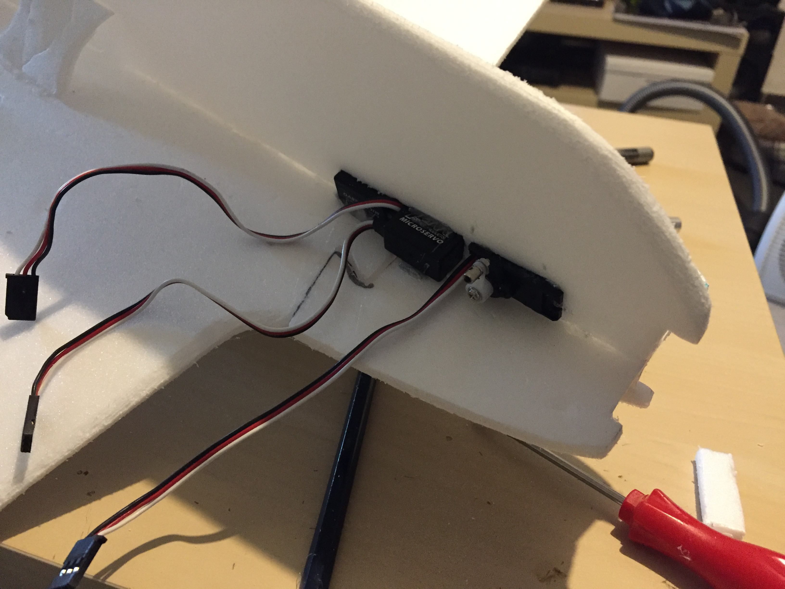
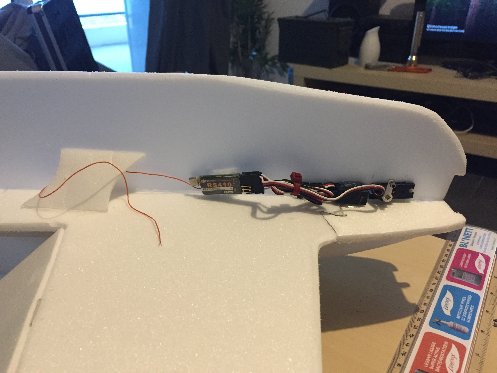
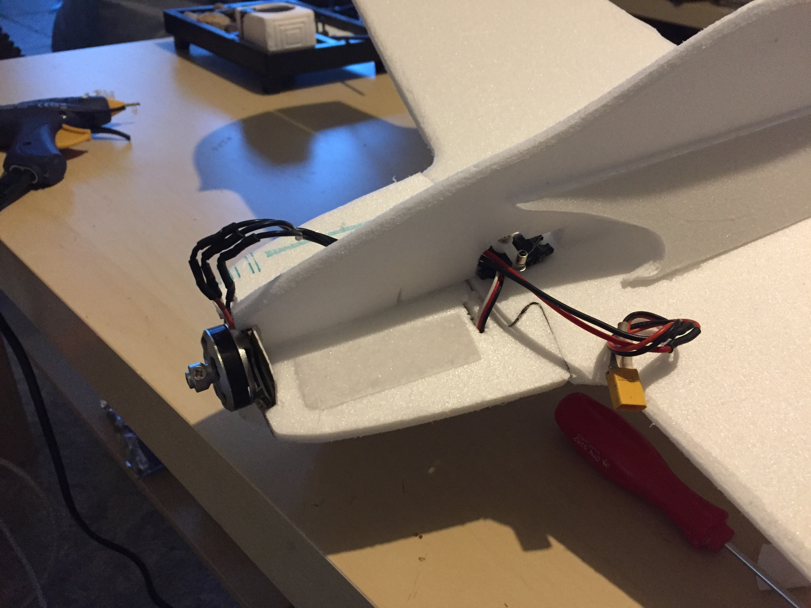
Résultat final
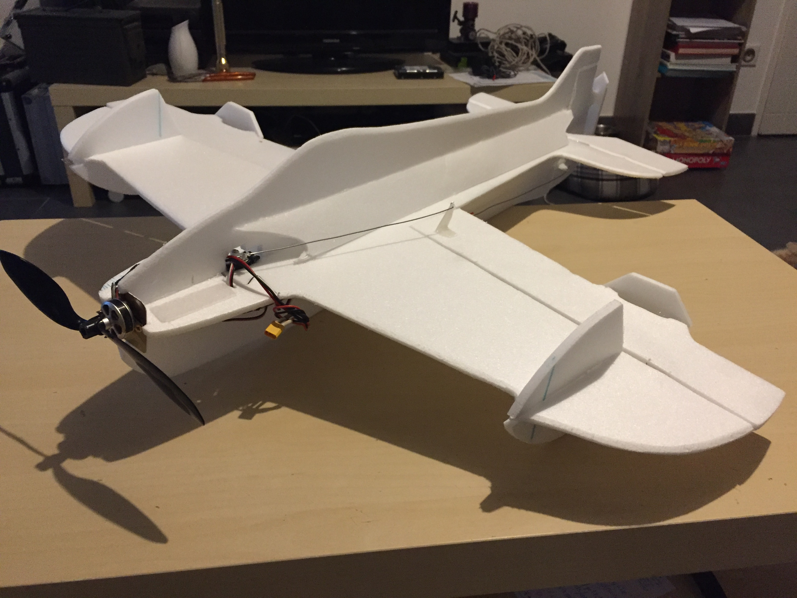
Je vous mets ici les liens vers les différents fichiers PDF :